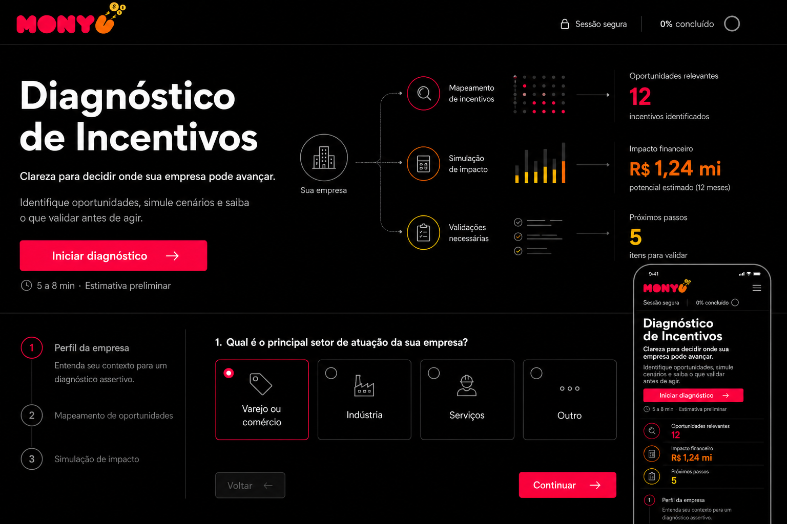

Prioridade sem excesso de caminhos
O fluxo elimina hipóteses cedo e mantém apenas o que pode mudar sua decisão.
 Iniciar
Iniciar
DIAGNÓSTICO EXECUTIVO
Identifique oportunidades, simule cenários preliminares e saiba o que validar antes de agir.
5 a 8 min · Estimativa preliminar
O fluxo elimina hipóteses cedo e mantém apenas o que pode mudar sua decisão.
Quando aplicável, a estimativa explica faixa, limites e informações ainda pendentes.
O resultado traduz regras complexas em prioridades, riscos e próximos passos objetivos.
COMO FUNCIONA
Objetivo, tributação, setor, porte e sinais operacionais organizam o ponto de partida.
O diagnóstico pergunta apenas o necessário para manter ou eliminar cada oportunidade.
Você recebe prioridades, alertas, simulações preliminares e os pontos que exigem validação.

CONTEÚDO DE APOIO
Materiais públicos, em linguagem clara, com fontes legais e limites explícitos.
Quando há P&D, Lucro Real e condições para iniciar uma avaliação técnica.
Explorar → 02O que precisa ser entendido sobre produto, produção no Brasil, NCM e PPB.
Explorar → 03Finalidade, estrutura operacional, teto legal e pontos de validação.
Explorar → 04Uma leitura inicial das diferenças entre incentivo fiscal, funding e estruturação.
Comparar →TRANSPARÊNCIA
As simulações são preliminares e dependem de dados, documentação, regras vigentes e validação fiscal, contábil e jurídica antes de qualquer aproveitamento.
Começar uma análise